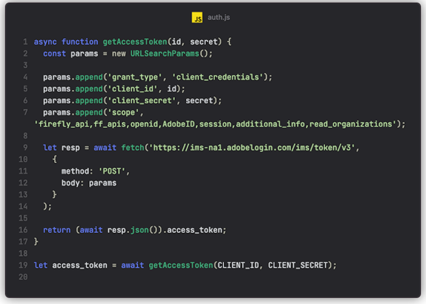

Automating and Scaling the Creative Process
with Adobe Firefly Services
Me
- Raymond Camden
- Senior Developer Evangelist for Adobe
- 🕸️ raymondcamden.com
- ✉️ raymondcamden@gmail.com

Game Plan
- What?
- Why?
- How!
This Deck (and Demos!)
github.com/cfjedimaster/fireflyservices-presoWhat are Firefly Services?
Adobe Firefly Services
- Automation solution for content generation at scale
- Set of services (grouped into various "families")
Service Families
- Photoshop
- Lightroom
- Firefly
- Content Tagging (not covered today)
Photoshop APIs
- Various APIs related to automating aspects of Photoshop
- Requires Cloud storage for operations (S3, Azure, Dropbox)
- Examples:
- Execute Photoshop Actions
- Create Renditions
- Remove Background
- Docs
Photoshop API Examples
- Action and ActionJSON endpoints let you automate incredibly complex workflows
- With ActionJSON, you can modify workflows on the fly
Photoshop API Examples
- Smart Object lets you dynamically replace items in an image
Photoshop API Examples
- Text endpoint lets you change text of a layer (text, formatting, style, etc)
Photoshop API Examples
- Remove Background and Generate Mask
Lightroom APIs
- Various APIs related to automating aspects of Lightroom
- Requires Cloud storage for operations (S3, Azure, Dropbox)
- Examples:
- Auto Straighten
- Auto Tone
- Apply Presets
- Docs
Lightroom API Examples
- Auto Tone applies multiple improvements to an image using AI/ML
Firefly APIs
- Generative AI APIs
- Mirrors (mostly) what’s available at firefly.adobe.com
- Examples:
- Text to Image
- Generative Expand
- Generate Similar
- Docs
Firefly API Examples
- Text to image with prompt, "an athletic sneaker and water bottle on a beach, sunny day"
Firefly API Examples
- You can specify "Art" or "Photo" (API will guess if you don't specify)
Firefly API Examples
- Style presets (huge list of styles) - like "cool tone", "beautiful" and "chaotic"
Firefly API Examples
- Can copy a style from another image
- Can copy structure from another image
Firefly API Examples
- Expand Image can either - just expand... or use a prompt to drive the new content
Firefly API Examples
- Prompt: "The sun is rising in the background and trees are visible."
Content Tagging APIs
- Content tagging and organization APIs
- Examples:
- Keyword tagging
- Color tagging
- OCR
- Docs
Why do we need these APIs?
Examples...
Workflow Automation
- Agency needs to create media assets
- Of different sizes - different campaigns - different languages
- Photoshop API can automate creating renditions from an artboard with variations of text and translations - all in one process
Asset Generation
- Agency needs to create media assets
- Of different sizes - different campaigns - different languages
- Photoshop API can automate creating renditions from an artboard with variations of text and translations - all in one process
- Firefly API can use GenAI to create new images
- Firefly API can then generatively expand new images for different sizes
How
General Flow
- Exchange credentials (client_id and client_secret) for an access token value
- Call the endpoint
- For Firefly APIs, your result is in the response (synch API)
- For Photoshop/Lightroom, your result is a URL (Job)
- Ping the job URL to monitor the result
- Remember - will be in cloud storage only
Getting an Access Token
- POST to https://ims-na1.adobelogin.com/ims/token/v3
- Pass client_id and client_secret
- Pass grant_type of client_credentials
- Pass scope of "firefly_api,ff_apis,openid,AdobeID,session,additional_info,read_organizations"
- Returns access_token and expires_in
Getting an Access Token
Demo
Run demos/basicauth.mjs
Making an API Call - Firefly
- Check the reference for required vs optional results
- Always includes CLIENT_ID and Access Token
- Make your call
- Handle the responses (URLs)
Making an API Call - Firefly Text to Image
- Text to image requires (at minimum) a prompt
- Can specify sizes, number of results, multiple styling options
- Reference: developer.adobe.com/firefly-services/docs/firefly-api/guides/api/image_generation/V3/
Demo
Run demos/simple_text_to_image.mjs
Making an API Call - Firefly Generative Expand
- Requires an uploaded source image (or cloud storage)
- Prompt is optional
- Can specify sizes, number of results, placement options
- Reference: developer.adobe.com/firefly-services/docs/firefly-api/guides/api/generative_expand/V3/
Demo
Run demos/simple_expand_image.mjs
Making an API Call - Photoshop/Lightroom
- Check the reference for required vs optional results
- Ensure inputs are on cloud storage, and have a place for output
- Always includes CLIENT_ID and Access Token
- Make your call
- Result is a "job" URL
- Ping job URL for status
Making an API Call - Lightroom AutoTone
- AutoTone requires an input URL, output URL, and image type
- Can specify quality
- Reference: developer.adobe.com/firefly-services/docs/lightroom/api/lightroom_autoTone/
- Note - will require SDK/custom code for your cloud storage
Demo
Run demos/simple_autotone.mjs
Putting it Together
- If using PS/LR, prepare cloud storage
- Coordinate the flow of assets from your source to Firefly/cloud storage
- Build and test the workflow
- Handle exceptions
Workflow Example
- Use Firefly to generate an image
- Use Photoshop to render a thumbnail version*
Demo
Run demos/workflow_demo.mjs and 2 if enough time!
Resources
Questions?